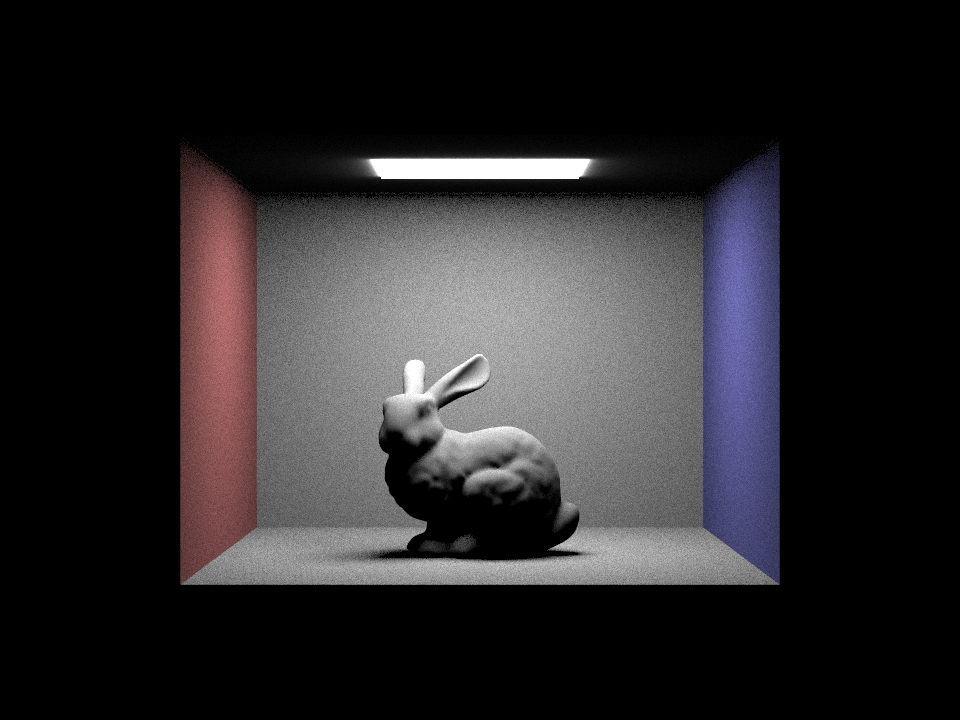

In this project, we took on the daunting task of implementing all the bare bones of a ray-tracing renderer. In order for it to be able to handle general scenes, we started out by implementing ray intersections with common template shapes and building out core ray-tracing logic. To make sure we could process huge scenes, we needed to implement an accelerated ray tracing structure, i.e. a Bounding Volume Hierarchy. With these basic tools at our hands, we first worked on implementing the single bounce (and zero bounce) of the lighting rendering, i.e. the direct illumination of objects. Then using these concepts, we were able to extend our illumination globally by recursively exploring bounces (converging in expectation using Russian Roulette) up until our max desired recursive depth. Overall, this project was extremely challenging with many bugs that were hard to track down, but it was very rewarding to see the final results and understand the full inner workings that go into rendering.
Part 1: Ray Generation and Intersection
Roughly speaking, the ray tracing and primitive intersection portions of the pipeline are as follows:
- Ray generation (input: normalized image coordinates; output: a ray in world space). We transformed the coordinates to camera space, scaled them, then multiplied by the c2w matrix to transform the resulting ray to world space. We then normalized the ray's direction.
- Radiance estimation (input: pixel coordinates in unnormalized image space; output: radiance at each pixel). We normalized the coordinates given, generated the ray for the image at those coordinates according to the work in 1.1, then used est_radiance_global_illumination to estimate the scene radiance along the ray and store it in the sample buffer.
- Primitive intersection (input: a ray and a primitive, either sphere or triangle; output: the nearest intersection and whether or not it intersects). We will cover the triangle intersection work in more detail below, but the general steps were to use the primitive's coordinates and the ray to determine the point(s) of intersection, while ensuring that the parameterized t of intersection fell within acceptable bounds. If the intersection was valid, we update max_t for the ray (this ensures that anything behind the object doesn't get rendered and that rays render with their nearest object) and we return the metadata around the intersection with that object.
To implement triangle intersection, we followed the following steps:
-
We implemented the Moller-Trumbore algorithm to calculate the Barycentric coordinates b_0, b_1, and b_2 and
the parameter t for the ray:
[t, b_1, b_2] = 1 / (S_1 dot E_1) * [S_2 dot E_2, S_1 * S, S_2 dot D]where E_1 = P_1 - P_0, E_2 = P_2 - P_0, S = O - P_0, S_1 = D cross E_2, S_2 = S cross E_1, and P_i is a 3D point given for the triangle. - We then checked that all of the barycentric coordinates were between 0 and 1, and that t was in the bounds for the ray given by ray.min_t and ray.max_t.
- If these were all valid, then we updated t_max to reflect the intersected triangle and updated the Intersection object pointed to accordingly.
Here are some objects that we rendered after implementing Part I:
|
|
|
|
Part 2: Bounding Volume Hierarchy
We followed these steps in constructing our BVH:
- (This part was done for us). We constructed a large bounding box around all of the primitives.
- If the number of primitives bounded was less than or equal to the number of nodes permitted in a leaf, we returned the leaf, setting node->start and node->end accordingly.
- Otherwise, we calculated the longest axis (of x, y, z) and found the average centroid along that axis. This was the splitting heuristic we used. We partitioned the primitives (or more specifically, we partitioned the iterator wrapped around the primitives) such that all those with centroids larger than the split came after those with centroids smaller than or equal to the split.
- If the splitting heuristic resulted in an empty partition on one side, we would ensure that either the first or last primitive was sorted into the smaller or larger side, respectively.
- Afterward, we would recursively construct BVHs with each side of the partitioned primitives functioning as the new start and end, attaching the recursively constructed hierarchies to the left and right branches of the first hierarchy.
Here are some larger images that aren't really feasible without BVH acceleration. The first rendered in 0.3195s from 50801 primitives. The second rendered in 0.2629s from 133796 primitives. As you can see, BVH acceleration allows us to render very complex images very quickly.
|
|
|
|
The speed up is more evident when we compare times to render medium images. Without BVH acceleration, the first picture of the cow renders 5856 primitives in 131.64s. The second picture, of the teapot, renders 2464 primitives in 54.7747s. In contrast, the pictures render in 0.2804s and 0.2556s respectively when BVH acceleration is active. One other thing that we might notice is that when BVH acceleration is active, the number of intersection tests per ray is significantly smaller than that when BVH acceleration is inactive. This is because the acceleration narrows the search range for every ray that gets rendered via the bounding boxes logarithmically.
|
|
|
|
Part 3: Direct Illumination
Implementation of the Uniform Hemisphere Sampling Function: Given an intersection, a coordinate system to transform from object space to world space, the 3D vector representing our point of interest (hit_p), and w_out, object space coordinates of the outgoing vector, we first sample the hemisphere to get an inbound vector wj. Second, we generate a ray originating from hit_p, with direction based off wj's world space coordinates, to check if light traveling in its direction intersects an object in the BVH before the light source that it comes from. If there is an intersection, then we disregard the contribution from this sample. Once we have determined that the contribution from this sample will contribute to the overall lighting, we determine the actual contribution by multiplying 1. the intersection's radiance 2. the fraction of light actually reflected in w_out's direction from wj based on the intersection bsdf, 3. the dot product of wj and the normal vector (which is (0, 0, 1))—this gives us how the angle that wj comes in at affects how much light is reflected, and 4. 1/(2pi), which is the probability of sampling any given wj. These multiplicative factors together generate the reflectance equation we discussed in class, and we run this routing (sampling --> multiplying) for num_samples samples. What we finally return is the average of all the samples.
Implementation of the Importance Sampling Scheme: In the importance light sampling scheme, we only want to sample in directions where there are light sources. To do so, we modify our uniform hemisphere sampling function from before:
- For each light source in scene->lights, we use SceneLight::sample_L to sample it, returning its emitted radiance, a wi as before, a distToLight indicating how far away the light source is in the direction of wi, and the value of the sampling probability density function in that direction.
- If the light source is a point light, then we only sample it once and multiply the resuting contribution (if any) by ns_area_light. If the light source is an area light, then we sample it ns_area_light times.
- As before, for each sample we generate a shadow ray, this time using dist_to_light and setting max_t accordingly. If the shadow ray intersects no objects, we can count this light source's contribution from this direction.
- Finally, we use the reflectance equation as before to calculate the contribution for a given light source and direction, multiplying the intersection radiance, the bsdf fraction, the inverse of the probability density function value, and the Lambertian factor. We then average these contributions over ns_area_light.
After implementing uniform hemisphere sampling, here are some of the images we were able to render:
|

|
|
|
And then after implementing importance sampling, to look at noise levels in soft shadows, we render CBbunny at 1 sample per pixel and with 1, 4, 16, and 64 light ray.
|
|
|
|
|
|

|
Comparing uniform hemisphere sampling and importance sampling: We note that the differences between results from hemisphere sampling and importance sampling are not huge. There is, for example, less of a blur or glow around the light source in importance sampling compared to hemisphere sampling - and this is due to the fact that when we do importance sampling, we disregard non light source additions to radiance (and the points right next to the light source would shoot out rays that very rarely intersect with the light source in meaningful ways). In hemisphere sampling, however, we see the glow because the radiance at those points is contributed to by reflected light from everything else in the picture. The difference is much more apparent when we compare images like the dragon, which have point light sources. Here, you can see that with uniform hemisphere sampling, you cannot see the dragon at all. This is because it's enormously unlikely for you to sample the one point light source that the dragon gets lit up by. On the other hand, with importance sampling, you are guaranteed to sample that light source.

|
|
|
Part 4: Global Illumination
For indirect lighting, we used a recursion function to recursively update multiple bounces. We started out by modifying our estimate global illumination function to call at least one bounce. First, the base case was when the depth was 1 or less, since then we should return our original one bounce commands. Then to recurse, we use bsdf->sample_f to get a w_i and pdf, w a reflectance. We use the w_i in the opposite direction to trace out the ray to find an inter section (with one lower depth), and if there is one with the scene, and if our Russian Roulette tells us to continue, with cos(theta)>0, then we add the lighting formula again with a recursive call to do the bounces.
And here are some globally illuminated images:
|
|
|
|
Here's CBbunny, rendered with only direct and then only indirect illumination. Notice how the ground under the bunny has slightly more illumination than other areas, which results from the multi-bounce light from other surfaces reaching areas that the light directly can't reach.
|
|

|
We render CBbunny using max ray depth set to 0, 1, 2, 3, and 100.
We render CBLambertian spheres using 1, 2, 4, 8, 16, 64, and 1024 samples per pixel below, respectively:
Part 5: Adaptive Sampling
Here's how we implemented adaptive sampling (modifications were all in the way we generate rays):
- We created a counter for the number of actual samples.
- After that, we calculated the irradiance for each sample and added it to an accumulated irradiance. We did the same with the squared value of the irradiance.
- Every samplesPerBatch sample, we calculated the mean and variance of the irradiance of the samples so far, then checked whether I := 1.96 * (standard deviation) / sqrt(# of samples) was less than some maxTolerance * mean. If we succeeded this check, it meant that the pixel had converged and that we could stop generating rays for this pixel. We would break the loop and calculate the pixel's Monte Carlo average by dividing by the number of samples sampled.
Here are the results of our noiseless rate and resulting sampling heatmap:
|
|
|
|